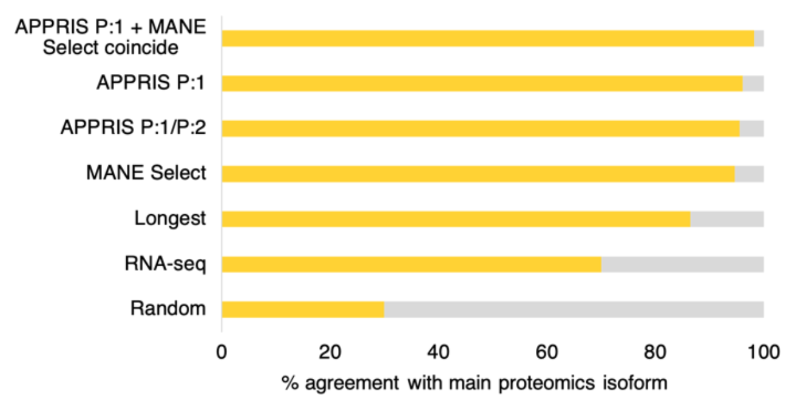
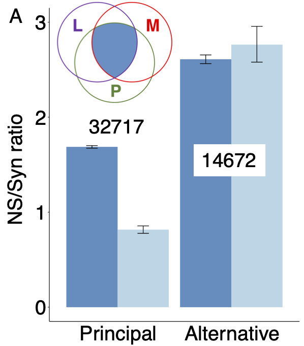
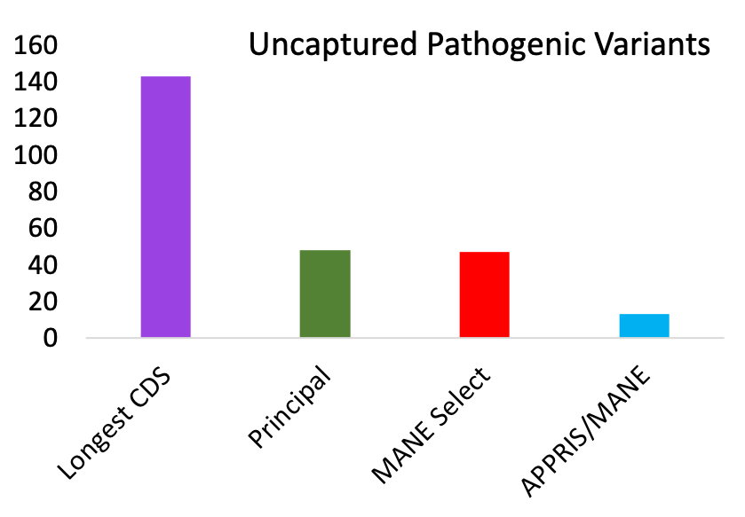

There are several methods for determining the reference isoform/transcripts for coding genes. APPRIS principal isoforms is one, but one could also use CDS length, expression data, or the recently released MANE Select transcripts1. MANE Select is a collaboration between Ensembl and RefSeq annotators.
We have recently shown that APPRIS principal and MANE Select transcripts outperform other methods by a substantial margin. Both agree more than 95% with the main isoform from large-scale proteomics experiments, considerably more than the longest CDS and the transcript with the most RNAseq evidence2.

Agreement between the four different methods for selecting reference transcripts and the main proteomics isoform. Random selections are included for comparison. Over 5,888 comparable genes, MANE Select, APPRIS principal (P1) AND the main proteomics isoform coincided 98.2% of the time.
Interestingly, when APPRIS principal and MANE Select transcripts coincide, the agreement with the main proteomics isoform was 98.2%. This orthogonal demonstrates two things, firstly that most coding genes have a single main isoform, and secondly that MANE Select/APPRIS principal agreement is the best way to predict this isoform. APPRIS and MANE agree over more than 94% of coding genes.
That agreement between MANE and APPRIS is a strong indication of functional importance is supported by human genetic variation data. Where the MANE Select and APPRIS principal transcripts coincide, this reference transcript is under strong purifying selection, while alternative isoforms are not2.

Non-synonymous to synonymous (NS/Syn) ratios for rare (dark blue) and common (light blue) allele frequencies for non-overlapping alternative exons from the human gene set for genes where APPRIS principal and MANE Select transcripts agree. Exons unique to principal/Select transcripts have significantly lower NS/Syn ratios for common allele frequencies, so are under selective pressure. Exons unique to alternative transcripts are not. Numbers are the numbers of exons in each set.
Further evidence come from ClinVar pathogenic mutations. Over genes where the APPRIS principal and MANE Select transcripts agree, their exons capture all but 13 validated pathogenic variants3. So, 99.96% of all 31,291 PubMed-supported pathogenic variants affect MANE/APPRIS coding exons. Just 0.04% of the 31,291 PubMed-supported pathogenic variants affect alternative exons. Alternative exons comprise approximately 10% of the human reference gene set.

For each of the methods, ClinVar pathogenic variants supported by PubMed references that were not captured by the reference transcripts. Validated variants had to affect the gene product.
Since transcripts that are both APPRIS principal and MANE Select are clearly so important, we now provide lists of transcripts that are both APPRIS principal and MANE Select. These are available both for current releases and for prior releases (under request). Releases prior to the publication of MANE Select transcripts are generated via the CDS, so genes may have multiple MANE/APPRIS agreements.
Initially these lists are available for GENCODE v19, the latest versions of GENCODE and for RefSeq 105.
Morales, J., et al. (2022). A joint NCBI and EMBL-EBI transcript set for clinical genomics and research. Nature 604, 310-315 (2022). doi: 10.1038/s41586-022-04558-8
Pozo, F., Rodriguez, J. M., Martínez Gómez, L., Vázquez, J., & Tress, M. L. (2022). APPRIS principal isoforms and MANE Select transcripts define reference splice variants. Bioinformatics. 2022 Sep 16;38(Supplement_2):ii89-ii94. doi: 10.1093/bioinformatics/btac473
Pozo, F., Rodriguez, J. M., Vazquez, J., & Tress, M. L. (2022).Clinical variant interpretation and biologically relevant reference transcripts.Npj Genomic Medicine. doi: TBD